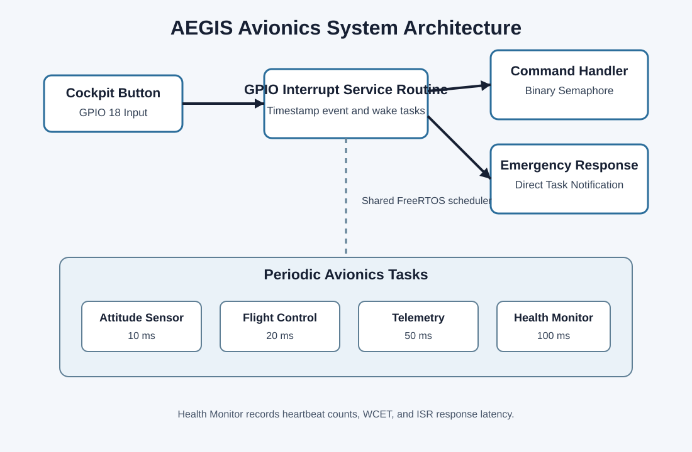

Project Overview
AEGIS is a simulated avionics flight-control platform designed to demonstrate real-time embedded-system concepts using FreeRTOS. The application combines periodic avionics tasks with an interrupt-driven emergency-response path.
The project was tailored toward embedded firmware and safety-critical systems roles. Its design emphasizes measured timing, clear task priorities, rapid interrupt response, and system observability.
Platform
ESP32-S3 running FreeRTOS in Wokwi.
Scheduling
Fixed-priority periodic real-time tasks.
Interrupt Path
GPIO ISR with semaphore and direct notification wake-up.
Monitoring
Heartbeat, WCET, and ISR-latency reporting.
System Architecture
A cockpit input generates a GPIO interrupt. The ISR records timing information and activates bottom-half tasks using two FreeRTOS synchronization mechanisms.

Task Schedule
| Task | Period | Priority | Purpose |
|---|---|---|---|
| Attitude Sensor | 10 ms | 15 | Simulates aircraft orientation sampling. |
| Flight Controller | 20 ms | 10 | Performs flight-control computations. |
| Telemetry | 50 ms | 5 | Simulates avionics data transmission. |
| Health Monitor | 100 ms | 2 | Reports heartbeat and timing evidence. |
| Emergency Response | Event driven | 12 | Responds to cockpit interrupt events. |
Full WCET evidence is available in task-table.md.
Timing Evidence
The Health Monitor reports each periodic task's heartbeat count and measured worst-case execution time. These values provide evidence that the tasks execute at their intended rates.

Current measured total utilization is approximately 80.16% in the Wokwi simulator.
Hazard Analysis
Delayed Response
A critical interrupt may be delayed by CPU load or an incorrect ISR scheduling decision.
Lost Commands
A binary semaphore may combine repeated events before the handler consumes them.
CPU Overload
Excessive execution time may increase latency or cause deadline misses.
The full analysis and standard mapping are available in hazard-analysis.md.
Demo and Source Code
The final demo will show system startup, periodic task execution, interrupt response, timing evidence, and the induced failure test.
Open Wokwi Project View Firmware Read Full README